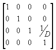
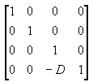
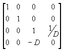
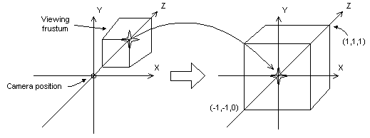
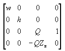
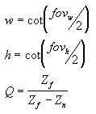
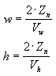

The projection matrix is typically a scale and perspective projection. The projection transformation converts the viewing frustum into a cuboid shape. Because the near end of the viewing frustum is smaller than the far end, this has the effect of expanding objects that are near to the camera; this is how perspective is applied to the scene.
In The Viewing Frustum, the distance between the camera required by the projection transformation and the origin of the space defined by the viewing transformation is defined as D. A beginning for a matrix defining the perspective projection might use this D variable like this:

The viewing matrix puts the camera at the origin of the scene. Because the projection matrix needs to have the camera at (0, 0, -D), it translates the vector by -D in the z-direction, by using the following matrix.

Multiplying these two matrices gives the following composite matrix.

The following illustration shows how the perspective transformation converts a viewing frustum into a new coordinate space. Notice that the frustum becomes cuboid and also that the origin moves from the upper-right corner of the scene to the center.

In the perspective transformation, the limits of the x- and y-directions are -1 and 1. The limits of the z-direction are 0 for the front plane and 1 for the back plane.
This matrix translates and scales objects based on a specified distance from the camera to the near clipping plane, but it doesn't consider the field of view (fov), and the z-values that it produces for objects in the distance can be nearly identical, making depth comparisons difficult. The following matrix addresses these issues, and it adjusts vertices to account for the aspect ratio of the viewport, making it a good choice for the perspective projection.

In this matrix, Zn is the z-value of the near clipping plane. The variables w, h, and Q have the following meanings. Note that fovw and fovh represent the viewport's horizontal and vertical fields of view, in radians.

For your application, using field-of-view angles to define the x and y scaling coefficients might not be as convenient as using the viewport's horizontal and vertical dimensions (in camera space). As the math works out, the following two formulas for w and h use the viewport's dimensions, and are equivalent to the preceding formulas.

In these formulas, Zn represents the position of the near clipping plane, and the Vw and Vh variables represent the width and height of the viewport, in camera space.
For a C++ application, these two dimensions correspond directly to the Width and Height members of the D3DVIEWPORT8 structure.
Whatever formula you decide to use, it's important that you set Zn to as large a value as possible, because z-values extremely close to the camera don't vary by much. This makes depth comparisons using 16-bit z-buffers somewhat complicated.
As with the world and view transformations, you call the IDirect3DDevice8::SetTransform method to set the projection transformation.